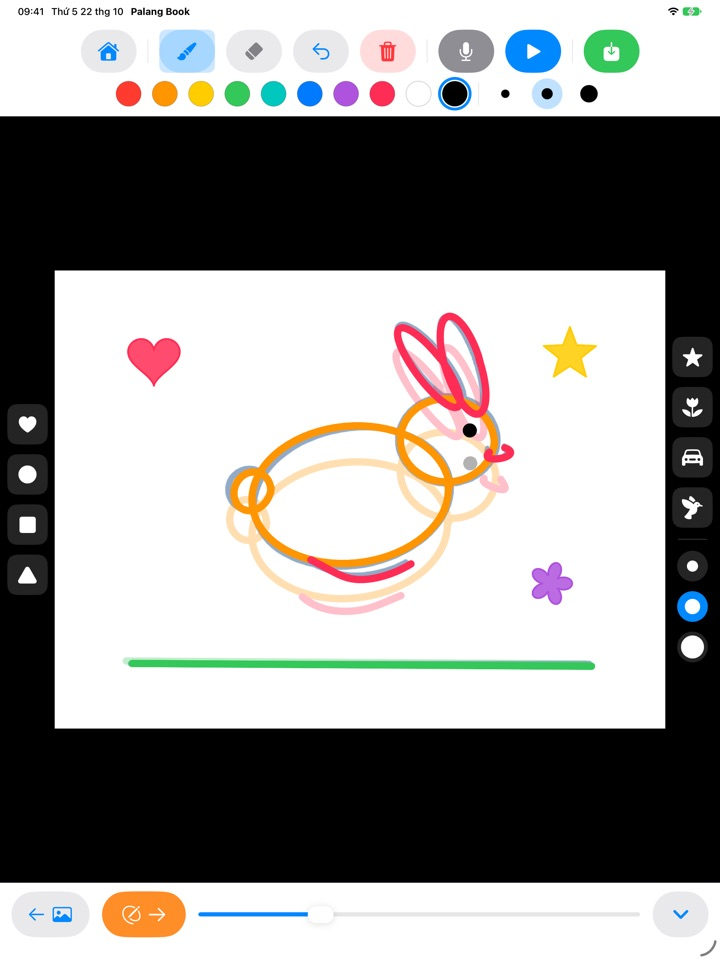
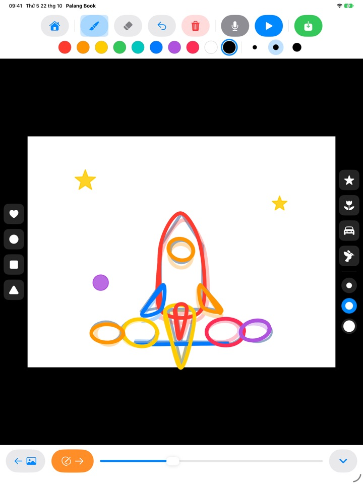
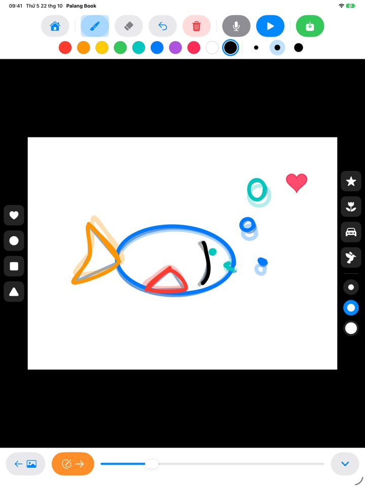
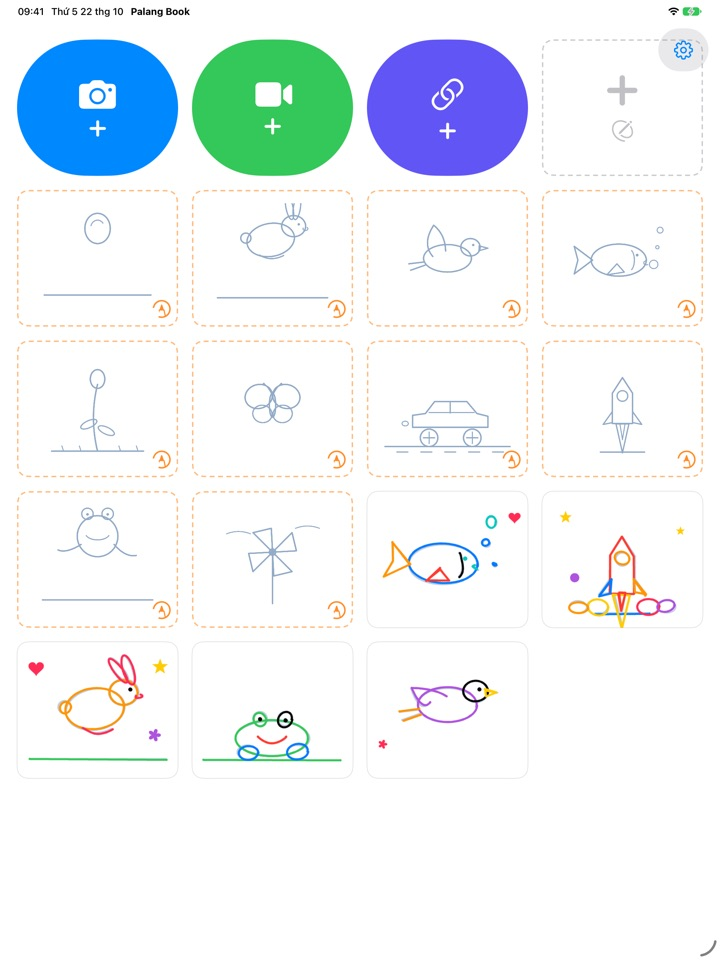

Vẽ theo nét,
xem tranh chuyển động
Bé vẽ theo nét mẫu mờ, mỗi lần một trang. Nhấn phát, nét mẫu biến mất và chỉ còn những nét bé vẽ đang chuyển động. Mọi nút đều là hình ảnh nên bé tự chơi được dù chưa biết đọc.
Dành cho iPad. Miễn phí 3 bộ vẽ theo nét.

Thử vẽ vài trang nhé
Vẽ một hình, rồi chạm mũi tên màu cam để sang trang mới. Trang trước sẽ hiện mờ phía dưới. Vẽ được hai, ba trang thì chạm nút phát màu xanh dương.
Bức tranh đẹp thế mà cứ đứng yên thì tiếc lắm, phải không?
Làm hoạt hình là vẽ gần như cùng một hình nhiều lần, mỗi lần đổi một chút, nên tự bé sẽ không biết bắt đầu từ đâu. Palang Book đặt sẵn nét mẫu mờ đã chứa chuyển động, bé chỉ cần vẽ theo. Nhấn phát là tranh của bé chuyển động ngay.
Vẽ theo nét là có hoạt hình
Quả bóng nảy, chú thỏ nhảy, chú chim bay, chú cá bơi, bông hoa nở, cánh bướm, xe đua, tên lửa, chú ếch và chiếc chong chóng. Mỗi bộ có khoảng 20 trang nét mẫu.
Trang trước hiện mờ để bé dễ vẽ trang sau, và khi phát, nét mẫu biến mất, chỉ còn tranh của bé chuyển động.

Con dấu và mười màu
Chạm là đóng được trái tim, hình tròn, hình vuông, hình tam giác, ngôi sao, bông hoa, ô tô và chú chim. Con dấu và cọ đều có ba cỡ, cùng mười màu để chọn.
Có cục tẩy và hoàn tác nên vẽ sai cũng sửa được ngay. Vẽ bằng ngón tay hoặc Apple Pencil.

Trên video của bạn hoặc trên giấy trắng
Thêm video bạn tự quay hoặc video trong Ảnh rồi vẽ theo ngay trên đó. Khi ẩn nền, chỉ những cảnh đã vẽ được phát lần lượt trên giấy trắng. Còn có flipbook trắng hoàn toàn không có nét mẫu.
Chạm micrô để ghi giọng của bé đi kèm, rồi lưu tác phẩm thành video vào Ảnh để khoe với cả nhà.

Bắt đầu chỉ với ba bước
- 1
Chạm vào thẻ nét mẫu
Những thẻ có viền đứt nét màu cam trên màn hình chính là bộ vẽ theo nét.
- 2
Vẽ rồi lật trang
Mũi tên màu cam đưa bé sang trang sau.
- 3
Nhấn phát
Chạm nút phát màu xanh dương là tranh chuyển động.
Các nút dùng để làm gì
- Thẻ viền đứt nét màu cam
- Bắt đầu vẽ theo nét
- Thẻ viền đứt nét màu xám
- Flipbook trắng
- Camera xanh dương
- Vẽ lên video bạn tự quay
- Video xanh lá
- Thêm video từ Ảnh
- Liên kết màu chàm
- Dán liên kết tới tệp video
- Mũi tên cam
- Trang sau
- Nút phát xanh dương
- Phát hoạt hình, chạm lần nữa để dừng
- Mũi tên cong
- Hoàn tác nét vừa vẽ
- Thùng rác đỏ
- Xóa cả trang (hoàn tác để lấy lại)
- Micrô
- Ghi giọng nói trong lúc hoạt hình chạy lặp lại
- Biểu tượng video
- Ẩn nền video (sọc hồng nghĩa là chỉ hiện tranh vẽ)
- Nút lưu xanh lá
- Lưu thành video vào Ảnh
Muốn xóa một tác phẩm, hãy chạm và giữ thẻ của nó trên màn hình chính. Tranh vẽ, bản ghi âm và video đã thêm sẽ bị xóa cùng.
Miễn phí đã có nhiều thứ để thử. Thích thì có Gói trọn đời.
Miễn phí
- 3 bộ vẽ theo nét (quả bóng, chú thỏ, bông hoa)
- Lưu giữ 3 tác phẩm
- Thêm 1 video
- Flipbook trắng tối đa 10 trang
- Ghi giọng nói tối đa 15 giây
- Con dấu, màu, cọ và lưu vào Ảnh
Gói trọn đời
- Mọi bộ vẽ theo nét, kể cả các bộ sắp ra mắt
- Không giới hạn tác phẩm, số trang, video và thời gian ghi âm
- Bỏ thẻ Palang Book ở cuối video đã lưu
Mua một lần, không phải gói đăng ký. Dùng được trên mọi iPad trong nhà qua Chia sẻ trong gia đình.
Video lưu ở bản miễn phí sẽ kết thúc bằng một thẻ Palang Book ngắn. Nếu bạn đã dùng Palang Book từ trước khi có Gói trọn đời, mọi thứ đã được mở sẵn cho bạn.
Câu hỏi thường gặp
Nét mẫu hoạt động thế nào?
Những nét màu xanh da trời nhạt là nét mẫu. Bé vẽ đè lên theo, và khi bạn nhấn phát, nét mẫu biến mất, chỉ còn nét của bé chuyển động. Vẽ xong khoảng 20 trang là có hoạt hình.
Tôi muốn phát và lưu riêng tranh vẽ, không kèm video.
Trong tác phẩm có video, chạm biểu tượng video trên thanh công cụ phía trên cho đến khi nó chuyển sang sọc hồng. Khi đó cả lúc phát lẫn lúc lưu đều chỉ hiện tranh vẽ trên nền trắng. Chỉ những cảnh đã vẽ mới được phát, nên vẽ vài trang trên một video dài cũng thành một hoạt hình ngắn.
Video hoàn thành được lưu ở đâu?
Chạm nút lưu màu xanh lá ở đầu bên phải thanh công cụ, video mp4 sẽ được lưu vào Ảnh. Lần đầu lưu, hãy cho phép truy cập ảnh.
Làm sao để thêm giọng nói?
Chạm nút micrô để ghi âm trong lúc hoạt hình chạy lặp lại, rồi chạm dừng để kết thúc. Ghi lại sẽ thay bản ghi cũ. Giọng nói được đưa vào video khi bạn lưu.
Liên kết video không mở được.
Hãy kiểm tra kết nối internet và chắc rằng địa chỉ trỏ thẳng tới tệp video (kết thúc bằng .mp4 hoặc tương tự). Liên kết tới trang của các trang web chia sẻ video thì không mở được. Hãy dùng video bạn tự quay hoặc video được phép dùng tự do.
Lòng bàn tay cứ để lại vết.
Mũi tên cong xóa nét vừa vẽ, còn thùng rác đỏ xóa cả trang (hoàn tác để lấy lại). Nếu xảy ra thường xuyên, hãy gửi email để chúng tôi hỗ trợ.
Sao lại có phép tính trước màn hình mua?
Để các bé không tự vào được màn hình mua. Khi bé chạm vào thứ đang bị khóa, một ổ khóa lớn hiện ra kèm dòng “Hãy đưa cho người lớn xem nhé”, và màn hình mua chỉ mở sau khi người lớn trả lời một phép nhân.
Làm sao để khôi phục giao dịch mua?
Chạm bánh răng ở góc trên bên phải màn hình chính, chọn Gói trọn đời, trả lời câu hỏi dành cho người lớn rồi chạm Khôi phục giao dịch mua. Bạn cần đăng nhập bằng đúng tài khoản Apple đã dùng để mua.
Làm sao để gửi phản hồi từ ứng dụng?
Chạm bánh răng trên màn hình chính và chọn Gửi phản hồi. Bạn có thể đính kèm ảnh chụp màn hình, và để lại tên cùng email nếu muốn được trả lời. Mong phụ huynh là người gửi phản hồi.
Ứng dụng có thu thập thông tin của bé không?
Không. Palang Book không thu thập bất kỳ thông tin cá nhân nào, tranh vẽ và bản ghi âm chỉ nằm trên iPad của bạn. Xem chi tiết trong Chính sách quyền riêng tư.
Có câu hỏi hoặc gặp sự cố? Gửi email tới mizzking75@gmail.com. Chúng tôi thường trả lời trong vòng 2 đến 3 ngày.